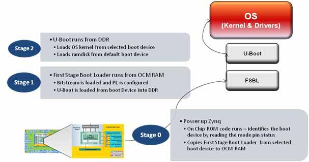
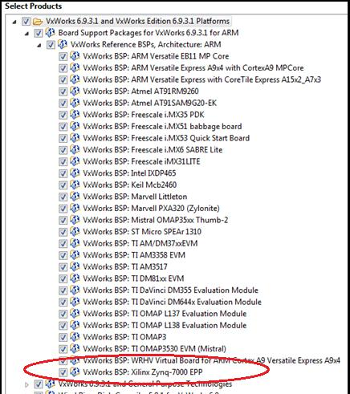
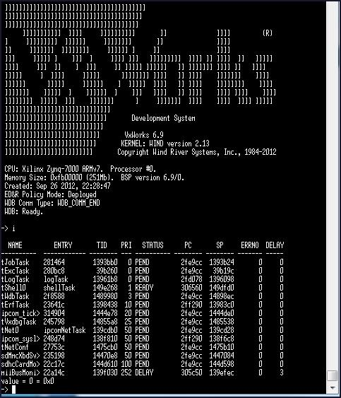
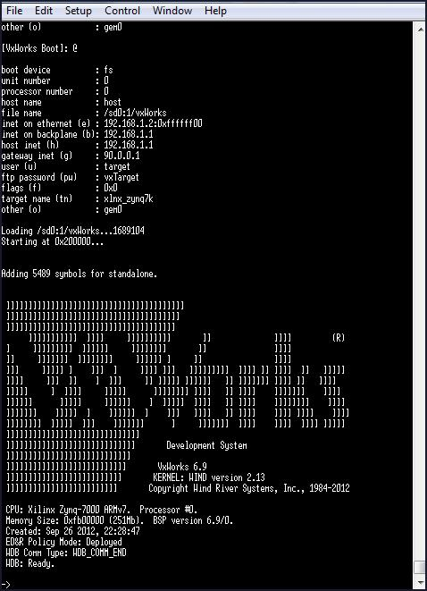
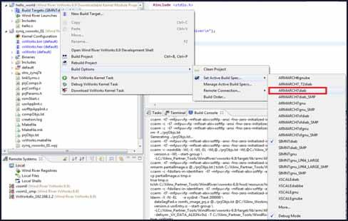
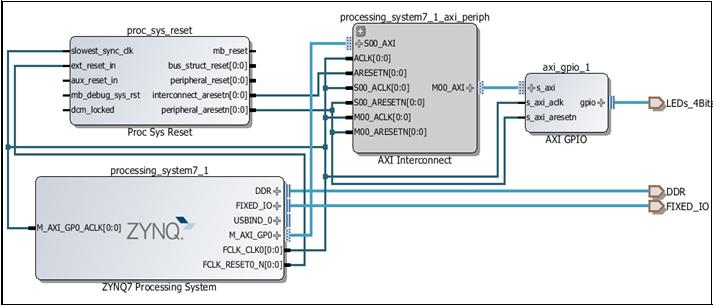
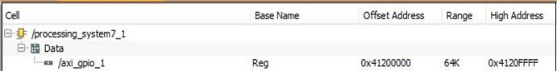
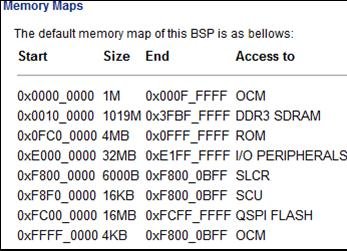

Configuring and setting up the VSB and VIP is known as platform development.
This application note has provided step-by-step instructions for running the VxWorks 6.9.3.1 BSP on the Zynq-7000 SoC All Programmable device platform, and additionally provided an overview of the boot process for the Zynq-7000 AP SoC platform.
You will know the steps for using VxWorks RTOS on the Zynq-7000 AP SoC platform.
VxWorks from Wind River:
This application note is intended as a getting started guide for new users of VxWorks on the Zynq-7000 device. The document contains the following primary sections:
This document assumes familiarity with the Xilinx® ISE® Design Suite and Zynq-7000 AP SoC design methodology. This document includes a reference system for the Xilinx ZC702 board derived from the Zynq-7000 AP SOC - Concepts, Tools and Techniques User Guide [Ref 1], which provides the details on how to rebuild such a system.
The Zynq-7000 AP SOC devices takes advantage of the on-chip CPU to facilitate configuration. Initial device configuration of the processing system (PS) and the programmable logic (PL) must take place through the PS when not using JTAG.
Two major blocks control the configuration:
Both the PS and PL can be configured under PS control either securely or non-securely. Configuration under external host control is also possible using JTAG.
Unlike other Xilinx 7 series devices, Zynq-7000 AP SOC devices do not support initial PL controlled configuration. Configuration on the Zynq-7000 AP SOC devices is a multi-step process. The configuration process involves a minimum of two stages, but generally requires three stages.
The stages are:
Figure 1 below illustrates a non-secure boot process for typical Linux system. Uboot is an example for higher-level boot loader and can be exchanged by VxWorks bootloader.
Figure 1: Boot Flow
The Zynq-7000 AP SoC processor subsystem configuration starts after power-on reset. The ARM® CPU starts executing code from the on-chip BootROM with JTAG disabled. The BootROM contains code for base drivers for NAND, NOR, Quad-SPI, SD, and PCAP. DDR and other peripheral initializations are not performed from the BootROM and must be done in the Stage 1 image, First Stage Bootload (FSBL) or later.
For security, the CPU is always the first device out of reset among all master modules within the PS. When the BootROM is running the JTAG is disabled to ensure security.
The BootROM code is also responsible for loading the FSBL. Zynq-7000 AP SoC architecture supports multi-stage user boot image loading; any further user boot image loading after FSBL is the responsibility of the user. When the BootROM releases control to FSBL, user software assumes full control of entire system. The only way to execute the BootROM again is by performing a reset.
The PS boot source is selected using the mode-pin signals (indicated by a weak pull-up or pull-down applied to specific pins), which are sampled after during power-on reset. The sampled value is stored in the BOOT_MODE register.
The BootROM supports encrypted and unencrypted images referred to as secure boot and non-secure boot, respectively. Additionally, the BootROM supports beginning execution of the stage 1 image from OCM after copying the image or executing direct from linear flash (NOR or QSPI) when using the execute-in-place (XIP) feature.
Any subsequent boot stages for either the PS or the PL are the responsibility of the user and are under user control. The BootROM code is not accessible to the user.
For secure boot decryption and authentication, the PS uses the hard-wired AES-256 and SHA-256 modules within the PL. For this reason, the PL must be powered up during any secure boot, even if only the PS is configured. The device encryption key is user-selectable from either the on-chip eFUSE unit or the on-chip block RAM.
The possible boot sources are: NAND, NOR, SD, Quad-SPI, and JTAG. The first four boot sources are used in master boot methods in which the CPU loads the external boot image from nonvolatile memory into the PS.
The First Stage Bootloader (FSBL) starts after the execution of the BootROM. BootRom loads the FSBL into the OCM, or the FSBL executes in place (XIP) unencrypted from memory mapped flash (NOR or Quad-SPI), contingent upon the BootROM header description.
The FSBL is responsible for:
Note: Before handoff to the second stage bootloader or bare-metal application, the FSBL invalidates the instruction cache and disables the cache and MMU, because Linux (and perhaps other operating systems) assume it is disabled upon start.
See the FSBL code provided with SDK for details on how the FSBL initializes the CPU and peripherals used by the FSBL, and how it uses a simple C run time library.
The bitstream for the PL and the second stage bootloader or bare-metal application data, as well as other code and data used by the second stage bootloader, Linux (or other operating system), or bare-metal application are grouped into partitions in the flash image.
The VxWorks bootloader application loads a VxWorks image onto a target. Like VxWorks, you can configure the VxWorks bootloader with various facilities; such as a command line interface for dynamically setting boot parameters, a network loader, and a file system loader.
Uniprocessor (UP), symmetric multiprocessor (SMP), and asymmetric multiprocessor (AMP), configurations of VxWorks use the same bootloader.
In a development environment, a bootloader is useful for loading a VxWorks image from a host system, where you can modify and rebuild VxWorks. You can also use a VxWorks bootloader in production systems when the bootloader and operating system are stored on a disk or other media.
Self-booting (standalone) VxWorks images do not require a bootloader. These images are commonly used in production systems (stored in nonvolatile devices).
Usually, the bootloader is programmed in a nonvolatile device (usually flash memory or EEPROM) at an address such that it is the first code run by the processor when the target is powered on or rebooted. The procedure to get the boot loader programmed in a nonvolatile device or written to a disk is dependent on the target, and is described in following section using an SD card image.
The VxWorks product installation includes default bootloader images for each installed BSP. If they do not meet your needs, you can create a custom bootloader.
The following steps are one-time only:
Figure 2: Select Products Dialog Box
The Zynq-7000 BSP is a standard part of the 6.9.3.1 install, as shown in Figure 3:
Figure 3: VxWorks BSP: Xilinx Zynq-7000 EPP
The default BSP does not enable support for accessing an SD card. Because you use the SD card to store the VxWorks image, the first step is to modify the BSP configuration.
#undef DRV_STORAGE_SDHC/
#define DRV_STORAGE_SDHC
#define INCLUDE_DOSFS
#define INCLUDE_DOSFS_MAIN
#define INCLUDE_DOSFS_CHKDSK
#define INCLUDE_DOSFS_FMT
#define INCLUDE_DOSFS_FAT
#define INCLUDE_DOSFS_SHOW
#define INCLUDE_DOSFS_DIR_VFAT
#define INCLUDE_DOSFS_DIR_FIXED
#define INCLUDE_FS_MONITOR
#define INCLUDE_FS_EVENT_UTIL
#define INCLUDE_ERF
#define INCLUDE_XBD
#define INCLUDE_XBD_BLKDEV
#define INCLUDE_XBD_TRANS
#define INCLUDE_DEVICE_MANAGER
#define INCLUDE_XBD_BLK_DEV
#define INCLUDE_XBD_PART_LIB
#define INCLUDE_DISK_UTIL
This enables the SDHC controller, as well as drivers for the FAT file system.
To use the VxWorks BSP with the Wind River Workbench to create a VxWorks Kernel Image, do the following:
The Wind River SDK opens.
The New Project Wizard opens.
Figure 4: VxWorks Image Project
The New VxWorks Image Project multipage wizard opens.
Figure 5: VxWorks Image Project Multipage Wizard
Figure 6: New VxWorks Image Project: PROFILE_DEVELOPMENT Option
Figure 7: Component Configuration
You can now build the Kernel image.
Figure 8: Build Project Option
Use this shell to build a bootROM binary. The bootROM binary is the VxWorks bootloader (similar to Uboot); it is not within the Zynq-7000 device ROM.
cd ..\<install_dir>\WindRiver\vxworks-6.9\target\config\xlnx_zynq7k\
make clean make bootROM
The commands generate a file with the name bootROM. Rename the file to bootROM.elf
ZC702_bif_for_VxWorks:
{
[bootloader]zynq_fsbl_0.elf
bootROM.elf
}
Alternatively, you can copy the bootgen.exe tool to the current installation directory.
C:\<install_dir>\WindRiver\vxworks-6.9\target\config\xlnx_zynq7k\
bootgen image boot.bif I BOOT.BIN
This creates a system that can boot from an SD card.
The following subsection describes the required steps to boot from an SD card.
Use the Secure Digital (SD) card to boot the Zynq-7000 AP SoC Processor System (PS).
Figure 9: Image of SD Card and USB Connection
These settings ensure an SD card boot.
The VxWorks bootROM prompt opens.
@ to proceed the boot process.i to display all running tasks.VxWorks boots and presents the output as shown in Figure 10.
Figure 10: SD Boot Terminal Transcript
Repeat the first four steps shown in Booting From an Secure Digital Card, as follows:
Figure 11: Host Ethernet MAC Configuration
If you use the Wind River FTP server, select Security > User/rights.
The VxWorks bootROM prompt opens.
c then press Return to start the boot configuration.The boot prompt opens.
@ to start the boot process.VxWorks boots from the image using the terminal (Figure 12).
Figure 12: Boot Terminal Transcript
As short example, the following instructions describe how to build and download a small "Hello World" application to the remote target after you have set up and are running VxWorks.
The assumptions are:
To create the "Hello World" application:
Figure 13: New Project Wizard
Figure 14: New Kernel Module Project
A hello_world project opens in the Project Explorer Window.
#include <stdio.h>
void hello()
{
printf("Hello Wind River\n");
}
Figure 15: Build Target Selection
A message opens that asks if you want to set the active build spec to ARMARCH7<gnu|diab> (Figure 16).
Figure 16: Build Target Configuration
..\<project_name>\default). Click Finish.Figure 17: Debug Configuration Window
Alternatively, you can use the Browse button to find the hello world project.
The terminal window that is connected to the board issue the following message:
>> Break at 0x0144accc: hello +0x4 Task: 0x14cdfc0 (Hello)
Note: The message can differ slightly from yours as it depends on your Kernel settings. It just gives
you the hint that a task was downloaded and stopped for debug.
The terminal window displays: Hello Wind River.
i to see the tasks in the VxWorks task list.repeat 10,hello to repeat the task 10 times.In the ARM® Cortex™ A9 processor, every peripheral is memory mapped. The address map for the Zynq-7000 AP SoC processor, for example, is listed in the Zynq-7000 AP SoC Technical Reference Manual (UG585) [Ref 2].
Modify the "Hello World" application to access the GPIO peripheral. On the ZC702 board, MIO pin 10 is connected to an LED (DS12).
From the Zynq-7000 AP SoC Technical Reference Manual, (UG585) [Ref 6], you see that the base address of the GPIO peripheral is 0XE000A000. To access pin 10 as an output, you must configure this peripheral first:
The updated source code of the hello world application now looks like the following:
#include <stdio.h>
#include <sys/mman.h>
#define GPIO_BASE 0xE000A000
#define GPIO_DIRM_0 0x00000204
#define GPIO_OEN_0 0x00000208
#define GPIO_DATA_0 0x00000040
int main(void)
{
printf("Hello World!\n");
int val = 0xffffffff;
sysOutLong(GPIO_BASE + GPIO_DIRM_0, 0x00000400);
sysOutLong(GPIO_BASE + GPIO_OEN_0, 0x00000400);
while (1) {
sysOutLong(GPIO_BASE + GPIO_DATA_0, val);
sleep(1);
val ^= 0xffffffff;
}
return 0;
}
Accessing a peripheral in the Programmable Logic is very similar to accessing a peripheral in the processing system: both master GP AXI interfaces have an address space of 1GB, as can be seen in the Address Map table in the Zynq-7000 AP SoC Technical Reference Manual (UG585) [Ref 6]. The differences are:
The design created for this section contains an AXI_GPIO peripheral connected to the M_AXI_GP0 port of the PS.
The four GPIO pins of the AXI_GPIO peripheral are connected to the DS15 to DS18 LEDs on the ZC702 board.
Figure 18: Zynq-7000 Processor System and Peripherals
The Address Editor shows the base address where this peripheral is mapped, as shown in Figure 19.
Figure 19: Address Editor
After implementing this design, you generate a new FSBL, and use this FSBL, together with the generated BIT file, to create a new boot.bin file to download to the SD card.
//ZC702_bif_for_VxWorks:
{
[bootloader]fsbl.elf
bitfile.bit
bootROM.elf
}
Where:
This produces a new boot.bin file to boot the ZC702 board.
The default configuration of the VxWorks BSP configures the MMU to allow access to a limited set of addresses, listed in the documentation of the BSP.
Figure 20: Memory Map
The M_AXI_GP ports are not mapped.
To add the address range to the MMU configuration, modify the VxWorks BSP:
Figure 21: MMU Configuration
For example, on line 225, find the mapping for the GPIO peripheral used in the previous example:
{
ZYNQ7K_GPIO_BASE,/* Zynq-7000 gpio */ ZYNQ7K_GPIO_BASE,
PAGE_SIZE,
MMU_ATTR_VALID_MSK | MMU_ATTR_PROT_MSK |
MMU_ATTR_DEVICE_SHARED_MSK,
MMU_ATTR_VALID |MMU_ATTR_SUP_RWX|
MMU_ATTR_DEVICE_SHARED
},
{
0x41200000,/* My AXI gpio */
0x41200000, PAGE_SIZE,
MMU_ATTR_VALID_MSK | MMU_ATTR_PROT_MSK |
MMU_ATTR_DEVICE_SHARED_MSK,
MMU_ATTR_VALID| MMU_ATTR_SUP_RWX|
MMU_ATTR_DEVICE_SHARED
},
The BootROM then loads the updated VxWorks image.
Update the "hello world" project to access the AXI peripheral. The AXI_GPIO peripheral is slightly different from the hardened GPIO peripheral: you need only to set the direction, not enable the output driver.
Change the contents of the file to:
#include <stdio.h>
#include <sys/mman.h>
#define AXI_GPIO_BASE 0x41200000
#define AXI_GPIO_TRI 0x04
#define AXI_GPIO_DATA 0x00
int main(void)
{
printf("Hello World!\n");
int val = 0;
sysOutLong(AXI_GPIO_BASE + AXI_GPIO_TRI, 0);
while (1) {
sysOutLong(AXI_GPIO_BASE + AXI_GPIO_DATA, val);
printf("%d\n", val);
sleep(1);
val++;
if (val == 0x10000)
{
val = 0;
}
return 0;
}
When you rebuild this project, and run it on the ZC702 board, it toggles the LEDs every second.
This application note has provided step-by-step instructions for running the VxWorks 6.9.3.1 BSP on the Zynq-7000 SoC All Programmable device platform, and additionally provided an overview of the boot process for the Zynq-7000 AP SoC platform.
You now know the steps for using VxWorks RTOS on the Zynq-7000 AP SoC platform.
The following links are to additional resources referenced in this document:
https://portal.windriver.com/cgi-bin/windsurf/bsp/infoBSP.cgi?id=12020
https://support.windriver.com/olsPortal/faces/maintenance/downloadDetails.jspx?contentId=041654
https://support.windriver.com/olsPortal/faces/maintenance/downloadDetails.jspx?contentId=041575
Configuring and setting up the VSB and VIP is known as platform development.

VxWorks is a robust operating system; it has many useful and powerful features for you to use in your project.

All VxWorks projects are different, but they all require hardware configuration.

Step-by-step instructions for running the VxWorks 6.9.3.1 BSP on the Zynq-7000 SoC.